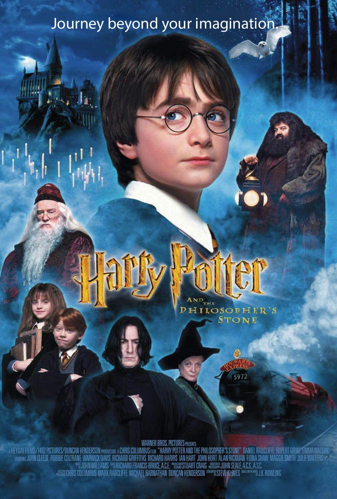
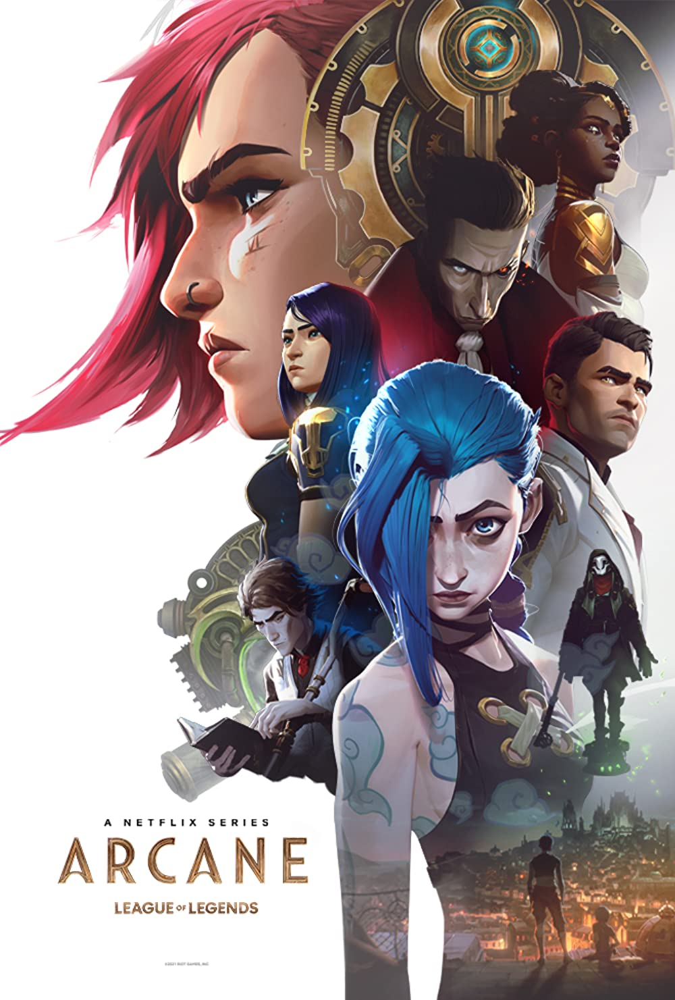
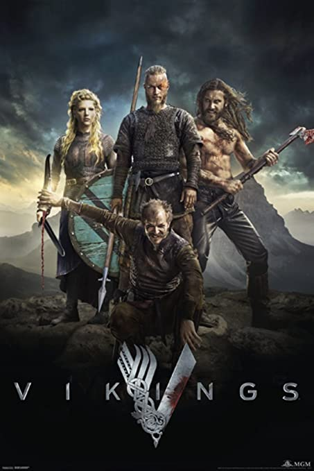

About
Hi!
Welcome to my own personal page, in which You are able to observe my favorite TV series and Movies.
I have indicated title, year of the first release (whether it is first season of series or first
movie from whole movie series), also brief information about them (please don't call police, cause
all information is extracted from IMDB or Wikipedia, I don't want to go to jail due to copyright
issues...).
In addition you are able to select each series or film on the poster which will navigate user to the
separate page, which will provide more information about selected item.
Lastly, on the list user is able to find all sort of types of films and series, thus, do not judge
my selections...
I mean it, don't judge or you will be found...
Have fun!
Films
Doctor Strange (2016)

Information
Doctor Strange is a 2016 American superhero film based on the Marvel Comics character of the same name. Produced by Marvel Studios and distributed by Walt Disney Studios Motion Pictures, it is the 14th film in the Marvel Cinematic Universe (MCU). The film was directed by Scott Derrickson from a screenplay he wrote with Jon Spaihts and C. Robert Cargill, and stars Benedict Cumberbatch as neurosurgeon Stephen Strange along with Chiwetel Ejiofor, Rachel McAdams, Benedict Wong, Michael Stuhlbarg, Benjamin Bratt, Scott Adkins, Mads Mikkelsen, and Tilda Swinton. In the film, Strange learns the mystic arts after a career-ending car crash.
Forrest Gump (1994)

Information
Forrest Gump is a 1994 American comedy-drama film directed by Robert Zemeckis and written by Eric Roth. It is based on the 1986 novel of the same name by Winston Groom and stars Tom Hanks, Robin Wright, Gary Sinise, Mykelti Williamson and Sally Field. The story depicts several decades in the life of Forrest Gump (Hanks), a slow-witted and kindhearted man from Alabama who witnesses and unwittingly influences several defining historical events in the 20th century United States. The film differs substantially from the novel.
The Godfather (1972)

Information
The Godfather is a 1972 American epic crime film[2] directed by Francis Ford Coppola, who co-wrote the screenplay with Mario Puzo, based on Puzo's best-selling 1969 novel of the same name. The film stars Marlon Brando, Al Pacino, James Caan, Richard Castellano, Robert Duvall, Sterling Hayden, John Marley, Richard Conte, and Diane Keaton. It is the first installment in The Godfather trilogy. The story, spanning from 1945 to 1955, chronicles the Corleone family under patriarch Vito Corleone (Brando), focusing on the transformation of his youngest son, Michael Corleone (Pacino), from reluctant family outsider to ruthless mafia boss.
Information
Interstellar is a 2014 epic science fiction film co-written, directed and produced by Christopher Nolan. It stars Matthew McConaughey, Anne Hathaway, Jessica Chastain, Bill Irwin, Ellen Burstyn, and Michael Caine. Set in a dystopian future where humanity is struggling to survive, the film follows a group of astronauts who travel through a wormhole near Saturn in search of a new home for mankind.
Information
Pulp Fiction is a 1994 American black comedy crime film written and directed by Quentin Tarantino, who conceived it with Roger Avary.[4] Starring John Travolta, Samuel L. Jackson, Bruce Willis, Tim Roth, Ving Rhames, and Uma Thurman, it tells several stories of criminal Los Angeles. The title refers to the pulp magazines and hardboiled crime novels popular during the mid-20th century, known for their graphic violence and punchy dialogue.
Saving Private Ryan (1998)

Information
Saving Private Ryan is a 1998 American epic war film directed by Steven Spielberg and written by Robert Rodat. Set during the Invasion of Normandy in World War II, the film is known for its graphic portrayal of war, especially its depiction of the Omaha Beach assault during the Normandy landings. The film follows United States Army Rangers Captain John H. Miller (Tom Hanks) and his squad (Tom Sizemore, Edward Burns, Barry Pepper, Giovanni Ribisi, Vin Diesel, Adam Goldberg, and Jeremy Davies) as they search for a paratrooper, Private first class James Francis Ryan (Matt Damon), the last surviving brother of four, the three other brothers having been killed in action.
Spider-Man: No Way Home (2021)

Information
Spider-Man: No Way Home is a 2021 American superhero film based on the Marvel Comics character Spider-Man, co-produced by Columbia Pictures and Marvel Studios and distributed by Sony Pictures Releasing. It is the sequel to Spider-Man: Homecoming (2017) and Spider-Man: Far From Home (2019), and the 27th film in the Marvel Cinematic Universe (MCU). The film was directed by Jon Watts and written by Chris McKenna and Erik Sommers. It stars Tom Holland as Peter Parker / Spider-Man alongside Zendaya, Benedict Cumberbatch, Jacob Batalon, Jon Favreau, Jamie Foxx, Willem Dafoe, Alfred Molina, Benedict Wong, Tony Revolori, Marisa Tomei, Andrew Garfield, and Tobey Maguire.
Spotlight (2015)

Information
Spotlight is a 2015 American biographical drama film directed by Tom McCarthy and written by McCarthy and Josh Singer.[5][6] The film follows The Boston Globe's "Spotlight" team, the oldest continuously operating newspaper investigative journalist unit in the United States,[7] and its investigation into cases of widespread and systemic child sex abuse in the Boston area by numerous Roman Catholic priests. Although the plot was original, it is loosely based on a series of stories by the Spotlight team that earned The Globe the 2003 Pulitzer Prize for Public Service.
Harry Potter (2001 - 2011)
Information
Harry Potter is a film series based on the eponymous novels by J. K. Rowling. The series is distributed by Warner Bros. and consists of eight fantasy films, beginning with Harry Potter and the Philosopher's Stone (2001) and culminating with Harry Potter and the Deathly Hallows – Part 2 (2011).[2][3] A spin-off prequel series that is planned to consist of five films started with Fantastic Beasts and Where to Find Them (2016), marking the beginning of the Wizarding World shared media franchise.[4]
Information
How to Train Your Dragon is a 2010 American computer-animated action fantasy film loosely based on the 2003 book of the same name by Cressida Cowell, produced by DreamWorks Animation and distributed by Paramount Pictures. The film was directed by Chris Sanders and Dean DeBlois from a screenplay by Will Davies, Sanders, and DeBlois, and stars the voices of Jay Baruchel, Gerard Butler, Craig Ferguson, America Ferrera, Jonah Hill, Christopher Mintz-Plasse, T.J. Miller, and Kristen Wiig. The story takes place in a mythical Viking world where a young Viking teenager named Hiccup aspires to follow his tribe's tradition of becoming a dragon slayer.
Series
Arcane (2021 - )
Information
Arcane (titled onscreen as Arcane: League of Legends) is an animated action-adventure series created by Christian Linke and Alex Yee for Netflix. Produced by Fortiche under the supervision of Riot Games, it is set in the League of Legends fictional universe,[1][2] and primarily focuses on sisters Vi and Jinx. The series was announced at the League of Legends 10th anniversary celebration in 2019,[3] and first released in November 2021.
Information
Brooklyn Nine-Nine is an American police procedural comedy television series that aired on Fox, later airing on NBC. The show aired from September 17, 2013 to September 16, 2021, for a total of eight seasons and 153 episodes. It was created by Dan Goor and Michael Schur. The series revolves around Jake Peralta (Andy Samberg), a New York City Police Department (NYPD) detective in Brooklyn's 99th Precinct, who often comes into conflict with his commanding officer, the serious and stern Captain Raymond Holt (Andre Braugher). The rest of the cast features Stephanie Beatriz as Rosa Diaz, Terry Crews as Terry Jeffords, Melissa Fumero as Amy Santiago, Joe Lo Truglio as Charles Boyle, Chelsea Peretti as Gina Linetti, Dirk Blocker as Michael Hitchcock, and Joel McKinnon Miller as Norm Scully.
Friends (1994)

Information
Friends is an American television sitcom created by David Crane and Marta Kauffman, which aired on NBC from September 22, 1994, to May 6, 2004, lasting ten seasons.[1] With an ensemble cast starring Jennifer Aniston, Courteney Cox, Lisa Kudrow, Matt LeBlanc, Matthew Perry and David Schwimmer, the show revolves around six friends in their 20s and 30s who live in Manhattan, New York City. The series was produced by Bright/Kauffman/Crane Productions, in association with Warner Bros. Television. The original executive producers were Kevin S. Bright, Kauffman, and Crane.
Game Of Thrones (2011)

Information
Game of Thrones is an American fantasy drama television series created by David Benioff and D. B. Weiss for HBO. It is an adaptation of A Song of Ice and Fire, a series of fantasy novels by George R. R. Martin, the first of which is A Game of Thrones. The show was shot in the United Kingdom, Canada, Croatia, Iceland, Malta, Morocco, and Spain. It premiered on HBO in the United States on April 17, 2011, and concluded on May 19, 2019, with 73 episodes broadcast over eight seasons.
Information
Parks and Recreation (also known as Parks and Rec) is an American political satire mockumentary sitcom television series created by Greg Daniels and Michael Schur. The series aired on NBC from April 9, 2009, to February 24, 2015, for 125 episodes, over seven seasons. A special reunion episode aired on April 30, 2020.[1][2][3][4] The series stars Amy Poehler as Leslie Knope, a perky, mid-level bureaucrat in the Parks Department of Pawnee, a fictional town in Indiana.
Rick and Morty (2013 - )

Information
Rick and Morty is an American adult animated science fiction sitcom created by Justin Roiland and Dan Harmon for Cartoon Network's nighttime programming block, Adult Swim. The series follows the misadventures of cynical mad scientist Rick Sanchez and his good-hearted, but fretful grandson Morty Smith, who split their time between domestic life and interdimensional adventures.
Information
South Park is an American animated sitcom created by Trey Parker and Matt Stone and developed by Brian Graden for Comedy Central. The series revolves around four boys—Stan Marsh, Kyle Broflovski, Eric Cartman, and Kenny McCormick—and their exploits in and around the titular Colorado town. South Park became infamous for its profanity and dark, surreal humor that satirizes a wide range of topics toward an adult audience.
The Office (2013)

Information
The Office is an American mockumentary sitcom television series that depicts the everyday work lives of office employees in the Scranton, Pennsylvania branch of the fictional Dunder Mifflin Paper Company. It aired on NBC from March 24, 2005, to May 16, 2013, spanning a total of nine seasons.[1] Based on the 2001–2003 BBC series of the same name created by Ricky Gervais and Stephen Merchant, it was adapted for American television by Greg Daniels, a veteran writer for Saturday Night Live, King of the Hill, and The Simpsons.
Information
The Witcher is a Polish-American fantasy drama streaming television series created by Lauren Schmidt Hissrich, based on the book series of the same name by Polish writer Andrzej Sapkowski. Set on a fictional, medieval-inspired landmass known as "the Continent", The Witcher explores the legend of Geralt of Rivia and Princess Ciri, who are linked to each other by destiny.[9] It stars Henry Cavill, Freya Allan and Anya Chalotra.
Vikings (2013 - 2020)
Information
Vikings is a historical drama television series created and written by Michael Hirst for the History channel, a Canadian network. Filmed in Ireland, it premiered on March 3, 2013, in Canada. The series concluded on December 30, 2020, when the second half of the sixth season was released in its entirety on Amazon Prime Video in Ireland, ahead of its broadcast on History in Canada from January 1 to March 3, 2021. A sequel series, titled Vikings: Valhalla, premiered on Netflix on February 25, 2022.[1]